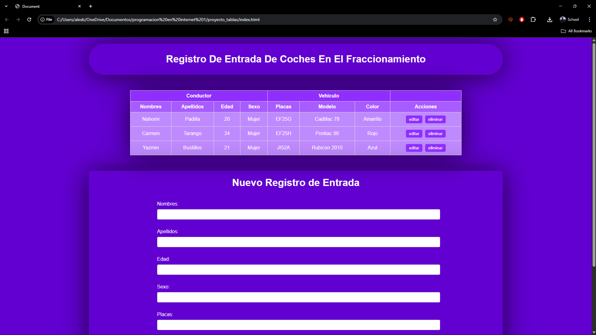
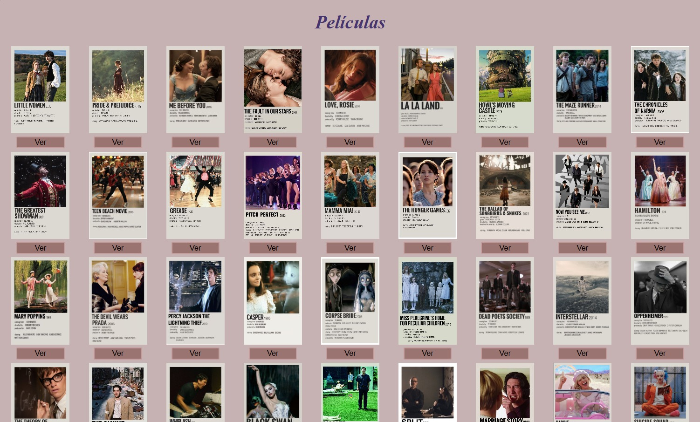
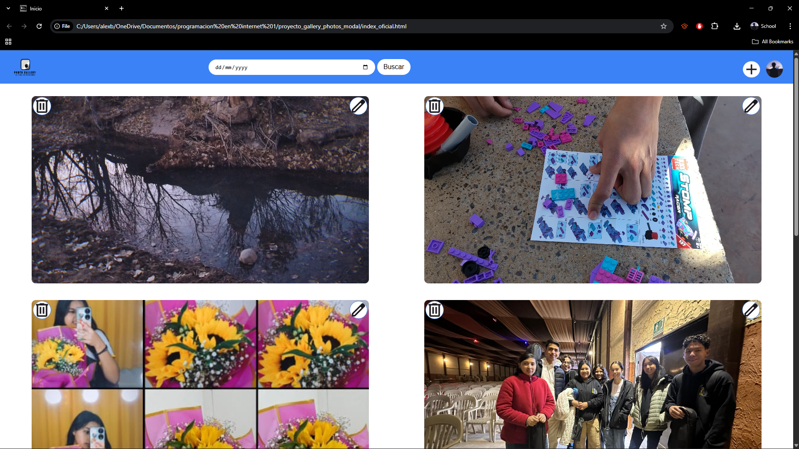
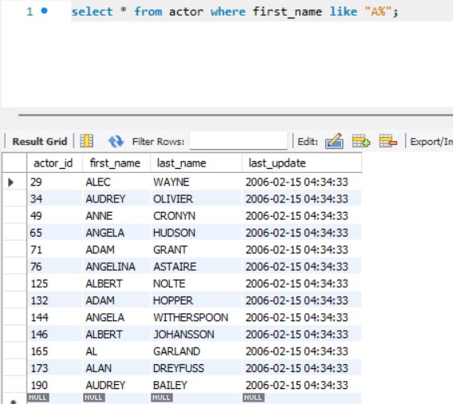
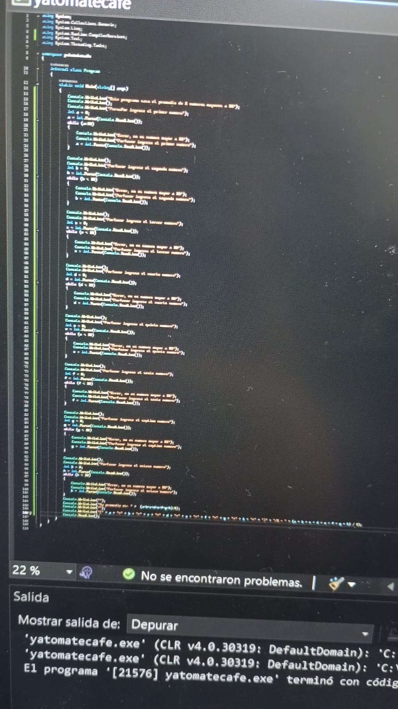

Registro de entrada
Es un registro de entrada para un sistema de control de un fraccionamiento.
Este es el registro de entrada de un fraccionamiento en una página web, tiene un diseño sencillo, estético y fácil de leer para identificar rápidamente el auto que se busca, se puede eliminar el registro, agregar uno nuevo rellenando la información y esta la opción de modificarlo.

Registro de entrada
Es un registro de entrada para un sistema de control de un fraccionamiento.
Esta es la página web de registro de entrada de un fraccionamiento. tiene un diseño sencillo y fácil de leer para identificar rápidamente el auto que se busca, se puede eliminar el registro cuando el auto sale del fraccionamiento, agregar uno nuevo rellenando la información y esta la opción de modificarlo.

Little Woman
Pagina web para mujeres de un proyecto de programación.
Esta página es de tipo informativo, cada botón tiene una funcionalidad de búsqueda especificada, es intuitiva y cuenta con diseño en relación a su contenido. Esta página cumple con el criterio de CRUD para una página web al poder: crear, subir, editar y eliminar posts.

Página de películas
Descripciones de películas.
El diseño de esta página te invita revisar cada opción, tiene un gran repertorio de películas y una breve reseña de cada una, al dar clic en el botón se muestra la información completa de cada película tanto su categoría, duración y descripción.

Página de series
Descripciones de series.
Este es un diseño web lindo y sencillo de manejar, se presenta una lista de diferentes tipos de series y al presionar el botón se muestra la información de cada serie.

Galería de Imágenes
Página web para mostrar imágenes, subir y editar.
Este es un diseño de página web donde uno puede almacenar sus imágenes y buscar fotos por fechas específicas. Cumple con el criterio CRUD al poder subir(Create), actualizar(Update) y eliminar(Delete) imágenes desde la misma página. Además de tener un diseño intuitivo y simple que llama la atención del usuario.

Base de Datos
Trabajos de base de datos.
En la imagen se muestra como se usan diferentes funciones y atajos que tiene el lenguaje de consulta de MySQL. El código básicamente dice "Muéstrame todo de la tabla actor donde la columna first_name tenga una A al principio". Esto ayuda a hacer más fácil leer los datos, así en lugar de buscar entre 200 filas buscas entre 10, se puede especificar aún más para tener un nivel de precisión mayor.

Matrices
Programa que resuelve matrices de 2x2 y 3x3
Este programa resuelve operaciones con matrices de 2x2 y 3x3, utilizando algoritmos de álgebra lineal para realizar cálculos como la suma, resta y multiplicación de matrices.